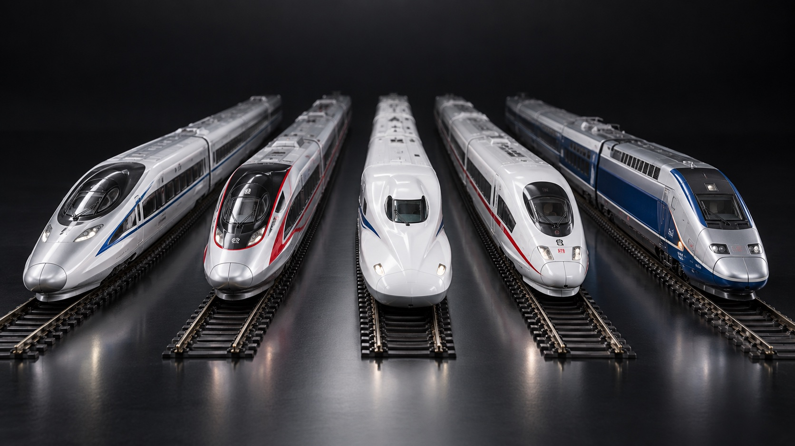
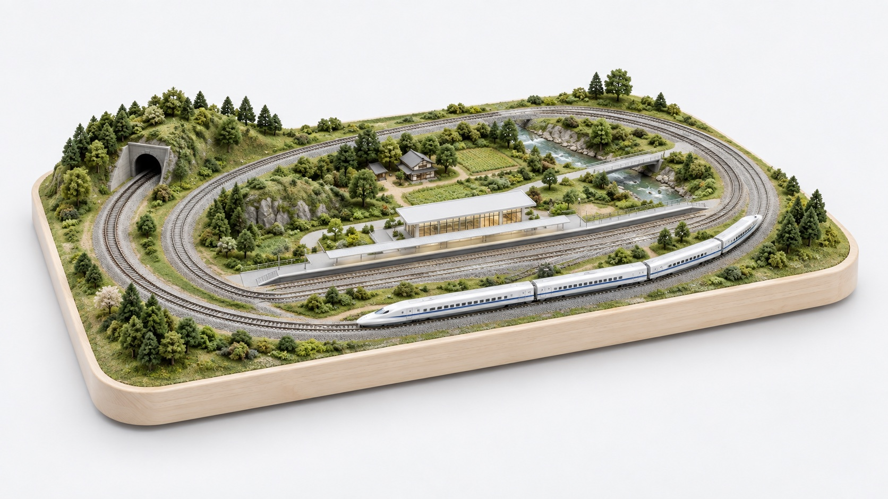

和谐号HARMONY复兴号FUXING新干线SHINKANSENICEGERMANYTGVFRANCE
继续探索

想怎么铺，就怎么铺。
点选与框选，自由旋转，整组移动。
每一段，都连得上灵感。
TOMIX 与 KATO 轨道库，端点自动吸附。
让构想，有图可循。
清晰的轨道规格，图纸与零件清单导出。
轨枕之上，自有星河。
枕星 Train · 为每一份铁路热爱而造

点选与框选，自由旋转，整组移动。
TOMIX 与 KATO 轨道库，端点自动吸附。
清晰的轨道规格，图纸与零件清单导出。
轨枕之上，自有星河。
枕星 Train · 为每一份铁路热爱而造